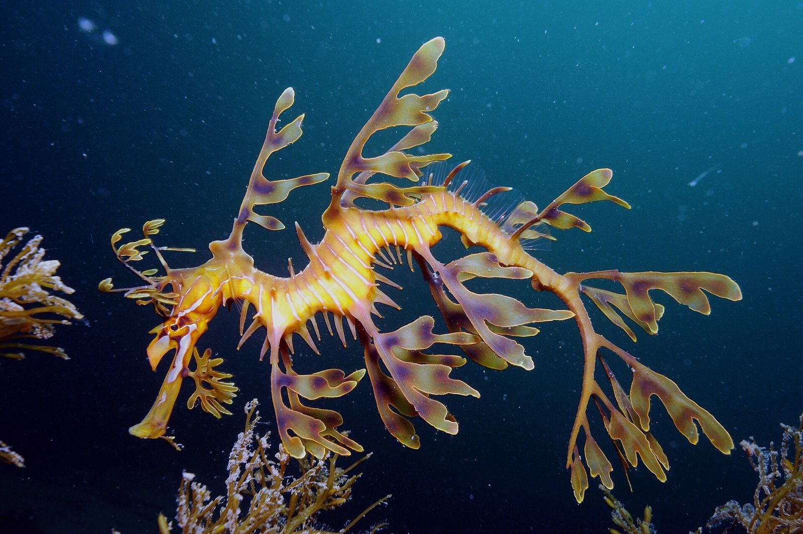
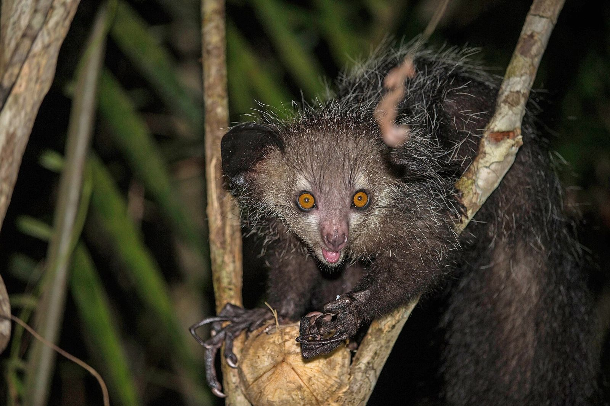
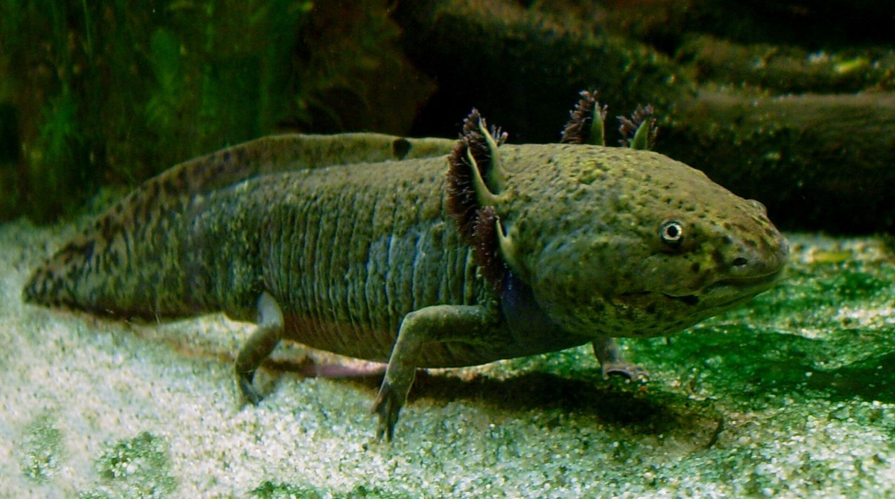
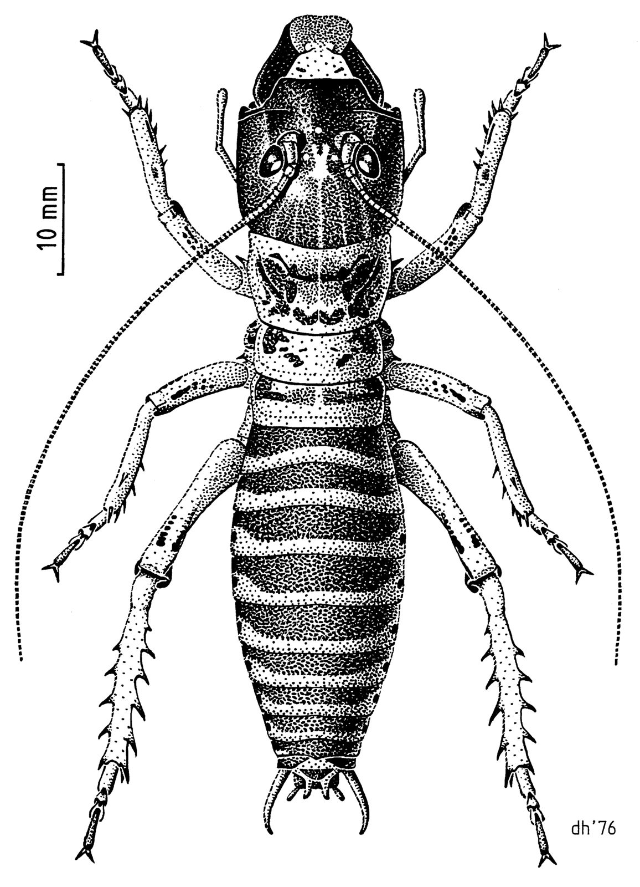

Year 9 Science · Lesson 10
Design an organism
Adaptations to fit a habitat
Leafy seadragon, Kangaroo Island. James Rosindell. CC BY-SA 4.0

Inspiration
Real organisms are stranger than fiction

Aye-aye
Taps on bark with a long, thin middle finger and listens for grubs inside.

Axolotl
Keeps its feathery gills as an adult, and can regrow a lost leg.

Mountain stone wētā
Lives high in South Island mountains and survives having most of its body water freeze overnight.
Name the type of each adaptation.
Aye-aye: nomis-simon, CC BY 2.0. Axolotl: LoKiLeCh, CC BY-SA 3.0. Stone wētā: Desmond W. Helmore, CC BY 4.0.


Lab manual p17 to p18
Your task
- Choose a habitat. Describe its biotic and abiotic factors, and the challenges of living there.
- Find one real predator and one real food source in that habitat.
- Design an organism. Draw it and label one structural, one behavioural and one physiological adaptation.
- Explain how it carries out at least five of the eight MRS C GREN processes.
- Build a model of it.
Step 1 · choose a habitat
Biotic and abiotic factors
Biotic factors are the living parts of a habitat: predators, prey, plants, competitors.
Abiotic factors are the non-living parts: temperature, water, light, wind, soil.
Habitats to choose from
- Native bush (ngahere)
- Rocky shore
- Alpine scree and tussock
- Wetland or swamp
- Deep ocean
- Hot desert
- Antarctic sea ice
Step 2 · real predators and food
Your organism has to fit a real food web
| Habitat | A real predator | A real food source |
|---|---|---|
| Native bush | Ruru (morepork), stoat | Wētā, berries, nectar |
| Rocky shore | Karoro (black-backed gull) | Seaweed, limpets |
| Alpine scree | Kea, stoat | Snow tussock seeds, insects |
| Antarctic sea ice | Leopard seal, orca | Krill, fish |
Choosing another habitat? Look up its food web first.
Worked example
The kōhatu crawler: an alpine scree organism
Habitat: loose rock on the Southern Alps. Freezing nights, strong sun, little water. Predator: kea. Food: snow tussock seeds.
- Structural: grey, speckled shell that matches the scree.
- Behavioural: freezes still when a kea's shadow passes over.
- Physiological: makes an antifreeze in its blood so it survives icy nights.


Step 4 · link your ideas
Use "therefore" and "because"
It has light, hollow bones, therefore it can fly using less energy.
The kōhatu crawler:
- Movement: wide, flat feet, therefore it can grip loose rocks without slipping.
- Nutrition: strong grinding jaws, because tussock seeds are hard.
- Sensitivity: eyes on top of its head, therefore it sees a kea coming from above.
- Excretion: very dry droppings, therefore it saves water.
- Reproduction: lays eggs under sunny rocks, because they stay warm and hidden.
Lab manual p17
Things to think about
- Where does it live in its habitat? Trees, burrows, nests?
- How big is it?
- Is it brightly coloured or camouflaged?
- How does it eat? How does it find its food?
- How does it move?
- How does it keep warm, or cool?
- Does it live in a group or alone?
- How does it escape predators?
Step 5 · build it
Make a model
- Build your organism from plasticine.
- Stick toothpick flags into it to label each adaptation. Write the type on each flag.
- Put a card beside it: name, habitat, predator, food.
Extension: put the models from the same habitat together. Who would eat whom? Build a class food web.
A skill you'll need
Explaining a design is a test skill
Test questions often give you an animal or a place you have never seen and ask you to suggest an adaptation.
A strong answer names the adaptation, says what it does, and links it to this habitat with "because" or "therefore".
Exit question
Your organism's most important adaptation
My organism's most important adaptation is ______, which is a ______ adaptation. It helps because ______ in its habitat.
Away today?
Missed this lesson? Catch up here
- Copy the definitions of biotic and abiotic.
- Lab manual p17 to p18: choose a habitat and plan your organism. Use the kōhatu crawler (slides 6 and 7) as a model.
- Draw and label it with one adaptation of each type.
- Write five MRS C GREN sentences using "therefore" or "because".
- Ask your teacher when you can build your model.